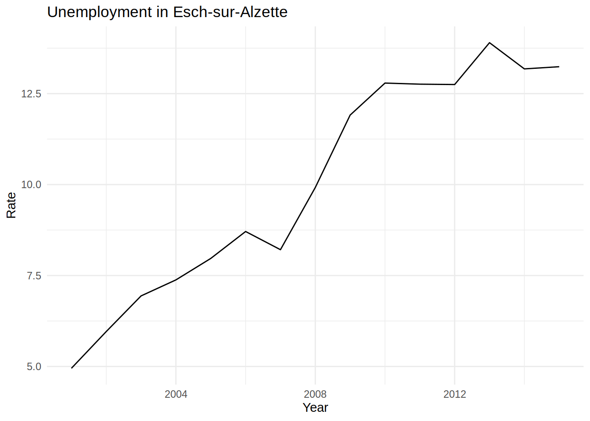
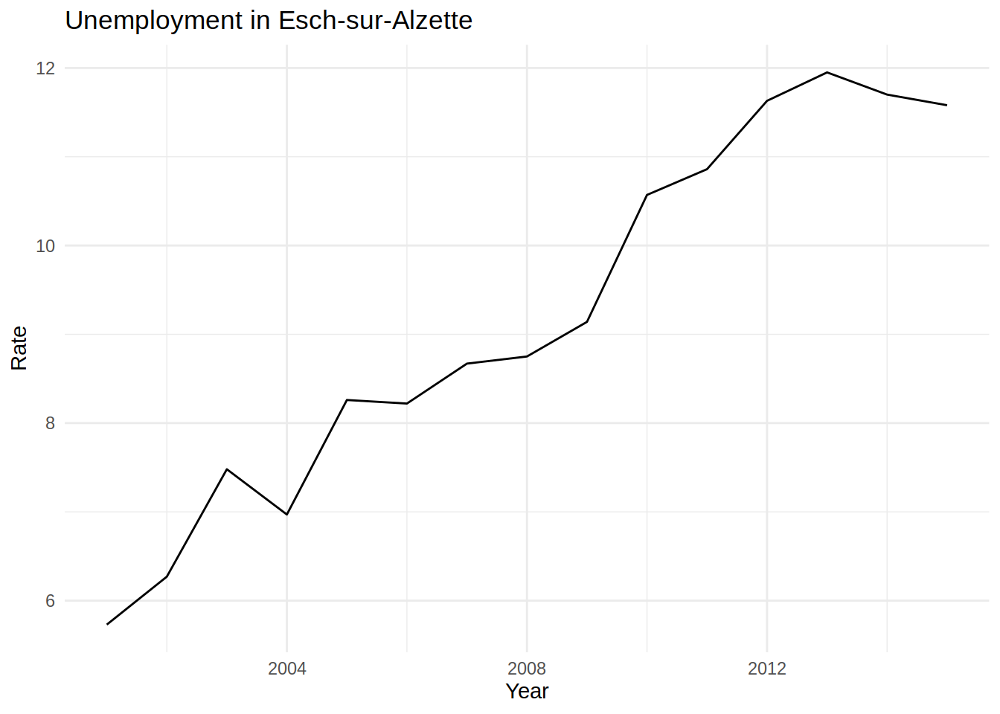
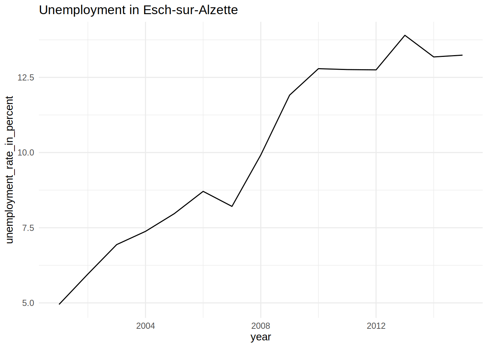
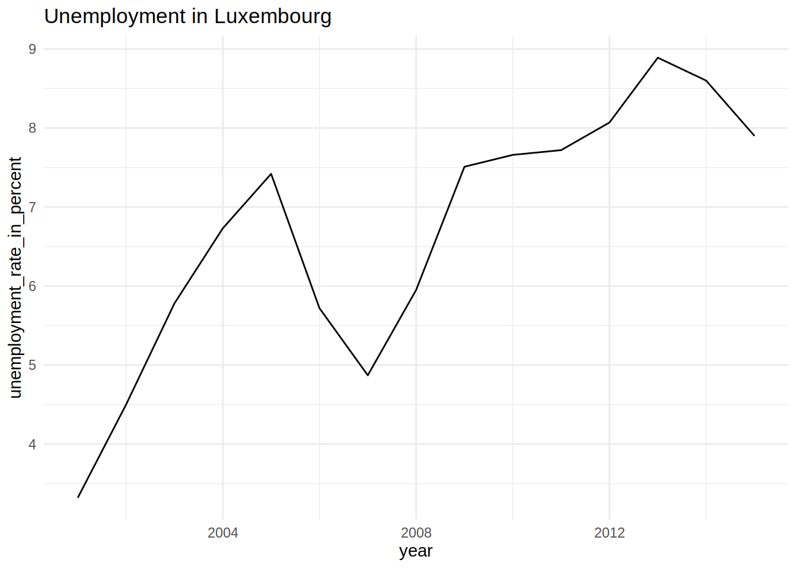
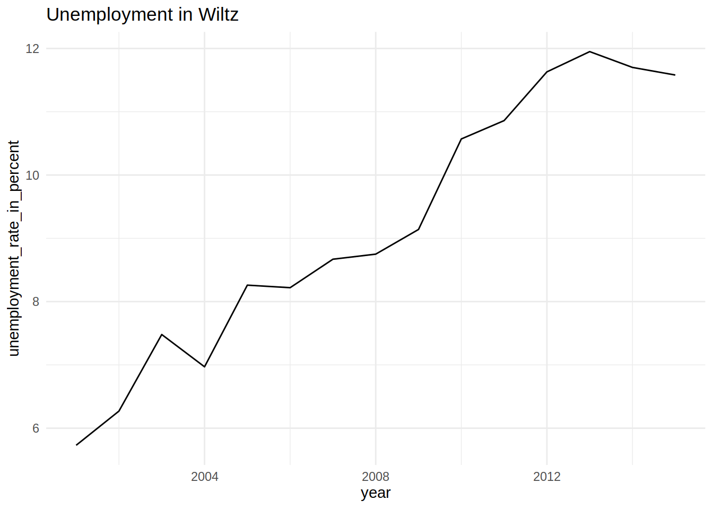

Chapter 8 Functional programming
Functional programming is a paradigm that I find very suitable for data science. In functional programming, your code is organised into functions that perform the operations you need. Your scripts will only be a sequence of calls to these functions, making them easier to understand. R is not a pure functional programming language, so we need some self-discipline to apply pure functional programming principles. However, these efforts are worth it, because pure functions are easier to debug, extend and document. In this chapter, we are going to learn about functional programming principles that you can adopt and start using to make your code better.
8.1 Function definitions
You should now be familiar with function definitions in R. Let’s suppose you want to write a function to compute the square root of a number and want to do so using Newton’s algorithm:
sqrt_newton <- function(a, init, eps = 0.01){
while(abs(init**2 - a) > eps){
init <- 1/2 *(init + a/init)
}
init
}You can then use this function to get the square root of a number:
sqrt_newton(16, 2)## [1] 4.00122We are using a while loop inside the body of the function. The body of a function are the
instructions that define the function. You can get the body of a function with body(some_func).
In pure functional programming languages, like Haskell, loops do not exist. How can you
program without loops, you may ask? In functional programming, loops are replaced by recursion,
which we already discussed in the previous chapter. Let’s rewrite our little example above
with recursion:
sqrt_newton_recur <- function(a, init, eps = 0.01){
if(abs(init**2 - a) < eps){
result <- init
} else {
init <- 1/2 * (init + a/init)
result <- sqrt_newton_recur(a, init, eps)
}
result
}sqrt_newton_recur(16, 2)## [1] 4.00122R is not a pure functional programming language though, so we can still use loops (be it while or
for loops) in the bodies of our functions. As discussed in the previous chapter, it is actually
better, performance-wise, to use loops instead of recursion, because R is not tail-call optimized.
I won’t got into the details of what tail-call optimization is but just remember that if
performance is important a loop will be faster. However, sometimes, it is easier to write a
function using recursion. I personally tend to avoid loops if performance is not important,
because I find that code that avoids loops is easier to read and debug. However, knowing that
you can use loops is reassuring, and encapsulating loops inside functions gives you the benefits of
both using functions, and loops. In the coming sections I will show you some built-in functions
that make it possible to avoid writing loops and that don’t rely on recursion, so performance
won’t be penalized.
8.2 Properties of functions
Mathematical functions have a nice property: we always get the same output for a given input. This is called referential transparency and we should aim to write our R functions in such a way. For example, the following function:
increment <- function(x){
x + 1
}Is a referential transparent function. We always get the same result for any x that we give to
this function.
This:
increment(10)## [1] 11will always produce 11.
However, this one:
increment_opaque <- function(x){
x + spam
}is not a referential transparent function, because its value depends on the global variable spam.
spam <- 1
increment_opaque(10)## [1] 11will produce 11 if spam = 1. But what if spam = 19?
spam <- 19
increment_opaque(10)## [1] 29To make increment_opaque() a referential transparent function, it is enough to make spam an
argument:
increment_not_opaque <- function(x, spam){
x + spam
}Now even if there is a global variable called spam, this will not influence our function:
spam <- 19
increment_not_opaque(10, 34)## [1] 44This is because the variable spam defined in the body of the function is a local variable. It
could have been called anything else, really. Avoiding opaque functions makes our life easier.
Another property that adepts of functional programming value is that functions should have no, or very limited, side-effects. This means that functions should not change the state of your program.
For example this function (which is not a referential transparent function):
count_iter <- 0
sqrt_newton_side_effect <- function(a, init, eps = 0.01){
while(abs(init**2 - a) > eps){
init <- 1/2 *(init + a/init)
count_iter <<- count_iter + 1 # The "<<-" symbol means that we assign the
} # RHS value in a variable inside the global environment
init
}If you look in the environment pane, you will see that count_iter equals 0. Now call this
function with the following arguments:
sqrt_newton_side_effect(16000, 2)## [1] 126.4911print(count_iter)## [1] 9If you check the value of count_iter now, you will see that it increased! This is a side effect,
because the function changed something outside of its scope. It changed a value in the global
environment. In general, it is good practice to avoid side-effects. For example, we could make the
above function not have any side effects like this:
sqrt_newton_count <- function(a, init, count_iter = 0, eps = 0.01){
while(abs(init**2 - a) > eps){
init <- 1/2 *(init + a/init)
count_iter <- count_iter + 1
}
c(init, count_iter)
}Now, this function returns a list with two elements, the result, and the number of iterations it took to get the result:
sqrt_newton_count(16000, 2)## [1] 126.4911 9.0000Writing to disk is also considered a side effect, because the function changes something (a file) outside its scope. But this cannot be avoided since you want to write to disk. Just remember: try to avoid having functions changing variables in the global environment unless you have a very good reason of doing so.
Very long scripts that don’t use functions and use a lot of global variables with loops changing the values of global variables are a nightmare to debug. If something goes wrong, it might be very difficult to pinpoint where the problem is. Is there an error in one of the loops? Is your code running for a particular value of a particular variable in the global environment, but not for other values? Which values? And of which variables? It can be very difficult to know what is wrong with such a script. With functional programming, you can avoid a lot of this pain for free (well not entirely for free, it still requires some effort, since R is not a pure functional language). Writing functions also makes it easier to parallelize your code. We are going to learn about that later in this chapter too.
Finally, another property of mathematical functions, is that they do one single thing. Functional programming purists also program their functions to do one single task. This has benefits, but can complicate things. The function we wrote previously does two things: it computes the square root of a number and also returns the number of iterations it took to compute the result. However, this is not a bad thing; the function is doing two tasks, but these tasks are related to each other and it makes sense to have them together. My piece of advice: avoid having functions that do many unrelated things. This makes debugging harder.
In conclusion: you should strive for referential transparency, try to avoid side effects unless you have a good reason to have them and try to keep your functions short and do as little tasks as possible. This makes testing and debugging easier, as you will see in the next chapter, but also improves readability and maintainability of your code.
8.3 Functional programming with {purrr}
I mentioned it several times already, but R is not a pure functional programming language. It is
possible to write R code using the functional programming paradigm, but some effort is required.
The {purrr} package extends R’s base functional programming capabilities with some very interesting
functions. We have already seen map() and reduce(), which we are going to see in more detail now.
Then, we are going to learn about some other functions included in {purrr} that make functional
programming easier in R.
8.3.1 Doing away with loops: the map*() family of functions
Instead of using loops, pure functional programming languages use functions that achieve
the same result. These functions are often called Map or Reduce (also called Fold). R comes
with the *apply() family of functions (which are implementations of Map),
as well as Reduce() for functional programming.
Within this family, you can find lapply(), sapply(), vapply(), tapply(), mapply(), rapply(),
eapply() and apply() (I might have forgotten one or the other, but that’s not important).
Each version of an *apply() function has a different purpose, but it is not very easy to
remember which does what exactly. To add even more confusion, the arguments are sometimes different between
each of these.
In the {purrr} package, these functions are replaced by the map*() family of functions. As you will
shortly see, they are very consistent, and thus easier to use.
The first part of these functions’ names all start with map_ and the second part tells you what
this function is going to return. For example, if you want doubles out, you would use map_dbl().
If you are working on data frames and want a data frame back, you would use map_df(). Let’s start
with the basic map() function. The following gif
(source: Wikipedia) illustrates
what map() does fairly well:

\(X\) is a vector composed of the following scalars: \((0, 5, 8, 3, 2, 1)\). The function we want to map to each element of \(X\) is \(f(x) = x + 1\). \(X'\) is the result of this operation. Using R, we would do the following:
library("purrr")
numbers <- c(0, 5, 8, 3, 2, 1)
plus_one <- function(x) (x + 1)
my_results <- map(numbers, plus_one)
my_results## [[1]]
## [1] 1
##
## [[2]]
## [1] 6
##
## [[3]]
## [1] 9
##
## [[4]]
## [1] 4
##
## [[5]]
## [1] 3
##
## [[6]]
## [1] 2Using a loop, you would write:
numbers <- c(0, 5, 8, 3, 2, 1)
plus_one <- function(x) (x + 1)
my_results <- vector("list", 6)
for(number in seq_along(numbers)){
my_results[[number]] <- plus_one(number)
}
my_results## [[1]]
## [1] 2
##
## [[2]]
## [1] 3
##
## [[3]]
## [1] 4
##
## [[4]]
## [1] 5
##
## [[5]]
## [1] 6
##
## [[6]]
## [1] 7Now I don’t know about you, but I prefer the first option. Using functional programming, you don’t
need to create an empty list to hold your results, and the code is more concise. Plus,
it is less error prone. I had to try several times to get the loop right
(and I’ve using R for almost 10 years now). Why? Well, first of all I used %in% instead of in.
Then, I forgot about seq_along(). After that, I made a typo, plos_one() instead of plus_one()
(ok, that one is unrelated to the loop). Let’s also see how this works using base R:
numbers <- c(0, 5, 8, 3, 2, 1)
plus_one <- function(x) (x + 1)
my_results <- lapply(numbers, plus_one)
my_results## [[1]]
## [1] 1
##
## [[2]]
## [1] 6
##
## [[3]]
## [1] 9
##
## [[4]]
## [1] 4
##
## [[5]]
## [1] 3
##
## [[6]]
## [1] 2So what is the added value of using {purrr}, you might ask. Well, imagine that instead of a list,
I need to an atomic vector of numerics. This is fairly easy with {purrr}:
library("purrr")
numbers <- c(0, 5, 8, 3, 2, 1)
plus_one <- function(x) (x + 1)
my_results <- map_dbl(numbers, plus_one)
my_results## [1] 1 6 9 4 3 2We’re going to discuss these functions below, but know that in base R, outputting something else involves more effort.
Let’s go back to our sqrt_newton() function. This function has more than one parameter. Often,
we would like to map functions with more than one parameter to a list, while holding constant
some of the functions parameters. This is easily achieved like so:
library("purrr")
numbers <- c(7, 8, 19, 64)
map(numbers, sqrt_newton, init = 1)## [[1]]
## [1] 2.645767
##
## [[2]]
## [1] 2.828469
##
## [[3]]
## [1] 4.358902
##
## [[4]]
## [1] 8.000002It is also possible to use a formula:
library("purrr")
numbers <- c(7, 8, 19, 64)
map(numbers, ~sqrt_newton(., init = 1))## [[1]]
## [1] 2.645767
##
## [[2]]
## [1] 2.828469
##
## [[3]]
## [1] 4.358902
##
## [[4]]
## [1] 8.000002Another function that is similar to map() is rerun(). You guessed it, this one simply
reruns an expression:
rerun(10, "hello")## [[1]]
## [1] "hello"
##
## [[2]]
## [1] "hello"
##
## [[3]]
## [1] "hello"
##
## [[4]]
## [1] "hello"
##
## [[5]]
## [1] "hello"
##
## [[6]]
## [1] "hello"
##
## [[7]]
## [1] "hello"
##
## [[8]]
## [1] "hello"
##
## [[9]]
## [1] "hello"
##
## [[10]]
## [1] "hello"rerun() simply runs an expression (which can be arbitrarily complex) n times, whereas map()
maps a function to a list of inputs, so to achieve the same with map(), you need to map the print()
function to a vector of characters:
map(rep("hello", 10), print)## [1] "hello"
## [1] "hello"
## [1] "hello"
## [1] "hello"
## [1] "hello"
## [1] "hello"
## [1] "hello"
## [1] "hello"
## [1] "hello"
## [1] "hello"## [[1]]
## [1] "hello"
##
## [[2]]
## [1] "hello"
##
## [[3]]
## [1] "hello"
##
## [[4]]
## [1] "hello"
##
## [[5]]
## [1] "hello"
##
## [[6]]
## [1] "hello"
##
## [[7]]
## [1] "hello"
##
## [[8]]
## [1] "hello"
##
## [[9]]
## [1] "hello"
##
## [[10]]
## [1] "hello"rep() is a function that creates a vector by repeating something, in this case the string “hello”,
as many times as needed, here 10. The output here is a bit different that before though, because first
you will see “hello” printed 10 times and then the list where each element is “hello”.
This is because the print() function has a side effect, which is, well printing to the console.
We see this side effect 10 times, plus then the list created with map().
rerun() is useful if you want to run simulation. For instance, let’s suppose that I perform a simulation
where I throw a die 5 times, and compute the mean of the points obtained, as well as the variance:
mean_var_throws <- function(n){
throws <- sample(1:6, n, replace = TRUE)
mean_throws <- mean(throws)
var_throws <- var(throws)
tibble::tribble(~mean_throws, ~var_throws,
mean_throws, var_throws)
}
mean_var_throws(5)## # A tibble: 1 × 2
## mean_throws var_throws
## <dbl> <dbl>
## 1 2.2 1.7mean_var_throws() returns a tibble object with mean of points and the variance of the points. Now suppose
I want to compute the expected value of the distribution of throwing dice. We know from theory that it should
be equal to \(3.5 (= 1*1/6 + 2*1/6 + 3*1/6 + 4*1/6 + 5*1/6 + 6*1/6)\).
Let’s rerun the simulation 50 times:
simulations <- rerun(50, mean_var_throws(5))Let’s see what the simulations object is made of:
str(simulations)## List of 50
## $ :Classes 'tbl_df', 'tbl' and 'data.frame': 1 obs. of 2 variables:
## ..$ mean_throws: num 2
## ..$ var_throws : num 3
## $ :Classes 'tbl_df', 'tbl' and 'data.frame': 1 obs. of 2 variables:
## ..$ mean_throws: num 2.8
## ..$ var_throws : num 0.2
## $ :Classes 'tbl_df', 'tbl' and 'data.frame': 1 obs. of 2 variables:
## ..$ mean_throws: num 2.8
## ..$ var_throws : num 0.7
## $ :Classes 'tbl_df', 'tbl' and 'data.frame': 1 obs. of 2 variables:
## ..$ mean_throws: num 2.8
## ..$ var_throws : num 1.7
.....simulations is a list of 50 data frames. We can easily combine them into a single data frame, and compute the
mean of the means, which should return something close to the expected value of 3.5:
bind_rows(simulations) %>%
summarise(expected_value = mean(mean_throws))## # A tibble: 1 × 1
## expected_value
## <dbl>
## 1 3.44Pretty close! Now of course, one could have simply done something like this:
mean(sample(1:6, 1000, replace = TRUE))## [1] 3.481but the point was to illustrate that rerun() can run any arbitrarily complex expression, and that it is good
practice to put the result in a data frame or list, for easier further manipulation.
You now know the standard map() function, and also rerun(), which return lists, but there are a
number of variants of this function. map_dbl() returns an atomic vector of doubles, as seen
we’ve seen before. A little reminder below:
map_dbl(numbers, sqrt_newton, init = 1)## [1] 2.645767 2.828469 4.358902 8.000002In a similar fashion, map_chr() returns an atomic vector of strings:
map_chr(numbers, sqrt_newton, init = 1)## [1] "2.645767" "2.828469" "4.358902" "8.000002"map_lgl() returns an atomic vector of TRUE or FALSE:
divisible <- function(x, y){
if_else(x %% y == 0, TRUE, FALSE)
}
map_lgl(seq(1:100), divisible, 3)## [1] FALSE FALSE TRUE FALSE FALSE TRUE FALSE FALSE TRUE FALSE FALSE TRUE
## [13] FALSE FALSE TRUE FALSE FALSE TRUE FALSE FALSE TRUE FALSE FALSE TRUE
## [25] FALSE FALSE TRUE FALSE FALSE TRUE FALSE FALSE TRUE FALSE FALSE TRUE
## [37] FALSE FALSE TRUE FALSE FALSE TRUE FALSE FALSE TRUE FALSE FALSE TRUE
## [49] FALSE FALSE TRUE FALSE FALSE TRUE FALSE FALSE TRUE FALSE FALSE TRUE
## [61] FALSE FALSE TRUE FALSE FALSE TRUE FALSE FALSE TRUE FALSE FALSE TRUE
## [73] FALSE FALSE TRUE FALSE FALSE TRUE FALSE FALSE TRUE FALSE FALSE TRUE
## [85] FALSE FALSE TRUE FALSE FALSE TRUE FALSE FALSE TRUE FALSE FALSE TRUE
## [97] FALSE FALSE TRUE FALSEThere are also other interesting variants, such as map_if():
a <- seq(1,10)
map_if(a, (function(x) divisible(x, 2)), sqrt)## [[1]]
## [1] 1
##
## [[2]]
## [1] 1.414214
##
## [[3]]
## [1] 3
##
## [[4]]
## [1] 2
##
## [[5]]
## [1] 5
##
## [[6]]
## [1] 2.44949
##
## [[7]]
## [1] 7
##
## [[8]]
## [1] 2.828427
##
## [[9]]
## [1] 9
##
## [[10]]
## [1] 3.162278I used map_if() to take the square root of only those numbers in vector a that are divisble by 2,
by using an anonymous function that checks if a number is divisible by 2 (by wrapping divisible()).
map_at() is similar to map_if() but maps the function at a position specified by the user:
map_at(numbers, c(1, 3), sqrt)## [[1]]
## [1] 2.645751
##
## [[2]]
## [1] 8
##
## [[3]]
## [1] 4.358899
##
## [[4]]
## [1] 64or if you have a named list:
recipe <- list("spam" = 1, "eggs" = 3, "bacon" = 10)
map_at(recipe, "bacon", `*`, 2)## $spam
## [1] 1
##
## $eggs
## [1] 3
##
## $bacon
## [1] 20I used map_at() to double the quantity of bacon in the recipe (by using the * function, and specifying
its second argument, 2. Try the following in the command prompt: `*`(3, 4)).
map2() is the equivalent of mapply() and pmap() is the generalisation of map2() for more
than 2 arguments:
print(a)## [1] 1 2 3 4 5 6 7 8 9 10b <- seq(1, 2, length.out = 10)
print(b)## [1] 1.000000 1.111111 1.222222 1.333333 1.444444 1.555556 1.666667 1.777778
## [9] 1.888889 2.000000map2(a, b, `*`)## [[1]]
## [1] 1
##
## [[2]]
## [1] 2.222222
##
## [[3]]
## [1] 3.666667
##
## [[4]]
## [1] 5.333333
##
## [[5]]
## [1] 7.222222
##
## [[6]]
## [1] 9.333333
##
## [[7]]
## [1] 11.66667
##
## [[8]]
## [1] 14.22222
##
## [[9]]
## [1] 17
##
## [[10]]
## [1] 20Each element of a gets multiplied by the element of b that is in the same position.
Let’s see what pmap() does. Can you guess from the code below what is going on? I will print
a and b again for clarity:
a## [1] 1 2 3 4 5 6 7 8 9 10b## [1] 1.000000 1.111111 1.222222 1.333333 1.444444 1.555556 1.666667 1.777778
## [9] 1.888889 2.000000n <- seq(1:10)
pmap(list(a, b, n), rnorm)## [[1]]
## [1] -0.1758315
##
## [[2]]
## [1] -0.2162863 1.1033912
##
## [[3]]
## [1] 4.5731231 -0.3743379 6.8130737
##
## [[4]]
## [1] 0.8933089 4.1930837 7.5276030 -2.3575522
##
## [[5]]
## [1] 2.1814981 -1.7455750 5.0548288 2.7848458 0.9230675
##
## [[6]]
## [1] 2.806217 5.667499 -5.032922 6.741065 -2.757928 12.414101
##
## [[7]]
## [1] -3.314145 -7.912019 -3.865292 4.307842 18.022049 1.278158 1.083208
##
## [[8]]
## [1] 6.2629161 2.1213552 0.3543566 2.1041606 -0.2643654 8.7600450 3.3616206
## [8] -7.7446668
##
## [[9]]
## [1] -7.609538 5.472267 -4.869374 -11.943063 4.707929 -7.730088 13.431771
## [8] 1.606800 -6.578745
##
## [[10]]
## [1] -9.101480 4.404571 -16.071437 1.110689 7.168097 15.848579
## [7] 16.710863 1.998482 -17.856521 -2.021087Let’s take a closer look at what a, b and n look like, when they are place next to each other:
cbind(a, b, n)## a b n
## [1,] 1 1.000000 1
## [2,] 2 1.111111 2
## [3,] 3 1.222222 3
## [4,] 4 1.333333 4
## [5,] 5 1.444444 5
## [6,] 6 1.555556 6
## [7,] 7 1.666667 7
## [8,] 8 1.777778 8
## [9,] 9 1.888889 9
## [10,] 10 2.000000 10rnorm() gets first called with the parameters from the first line, meaning
rnorm(a[1], b[1], n[1]). The second time rnorm() gets called, you guessed it,
it with the parameters on the second line of the array above,
rnorm(a[2], b[2], n[2]), etc.
There are other functions in the map() family of functions, but we will discover them in the
exercises!
The map() family of functions does not have any more secrets for you. Let’s now take a look at
the reduce() family of functions.
8.3.2 Reducing with purrr
Reducing is another important concept in functional programming. It allows going from a list of
elements, to a single element, by somehow combining the elements into one. For instance, using
the base R Reduce() function, you can sum the elements of a list like so:
Reduce(`+`, seq(1:100))## [1] 5050using purrr::reduce(), this becomes:
reduce(seq(1:100), `+`)## [1] 5050If you don’t really get what happening, don’t worry. Things should get clearer once I’ll introduce
another version of reduce(), called accumulate(), which we will see below.
Sometimes, the direction from which we start to reduce is quite important. You can “start from the
end” of the list by using the .dir argument:
reduce(seq(1:100), `+`, .dir = "backward")## [1] 5050Of course, for commutative operations, direction does not matter. But it does matter for non-commutative operations:
reduce(seq(1:100), `-`)## [1] -5048reduce(seq(1:100), `-`, .dir = "backward")## [1] -50Let’s now take a look at accumulate(). accumulate() is very similar to map(), but keeps the
intermediary results. Which intermediary results? Let’s try and see what happens:
a <- seq(1, 10)
accumulate(a, `-`)## [1] 1 -1 -4 -8 -13 -19 -26 -34 -43 -53accumulate() illustrates pretty well what is happening; the first element, 1, is simply the
first element of seq(1, 10). The second element of the result however, is the difference between
1 and 2, -1. The next element in a is 3. Thus the next result is -1-3, -4, and so
on until we run out of elements in a.
The below illustration shows the algorithm step-by-step:
(1-2-3-4-5-6-7-8-9-10)
((1)-2-3-4-5-6-7-8-9-10)
((1-2)-3-4-5-6-7-8-9-10)
((-1-3)-4-5-6-7-8-9-10)
((-4-4)-5-6-7-8-9-10)
((-8-5)-6-7-8-9-10)
((-13-6)-7-8-9-10)
((-19-7)-8-9-10)
((-26-8)-9-10)
((-34-9)-10)
(-43-10)
-53reduce() only shows the final result of all these operations. accumulate() and reduce() also
have an .init argument, that makes it possible to start the reducing procedure from an initial
value that is different from the first element of the vector:
reduce(a, `+`, .init = 1000)
accumulate(a, `-`, .init = 1000, .dir = "backward")## [1] 1055## [1] 995 -994 996 -993 997 -992 998 -991 999 -990 1000reduce() generalizes functions that only take two arguments. If you were to write a function that returns
the minimum between two numbers:
my_min <- function(a, b){
if(a < b){
return(a)
} else {
return(b)
}
}You could use reduce() to get the minimum of a list of numbers:
numbers2 <- c(3, 1, -8, 9)
reduce(numbers2, my_min)## [1] -8map() and reduce() are arguably the most useful higher-order functions, and perhaps also the
most famous one, true ambassadors of functional programming. You might have read about
MapReduce, a programming model for processing big
data in parallel. The way MapReduce works is inspired by both these map() and reduce() functions,
which are always included in functional programming languages. This illustrates that the functional
programming paradigm is very well suited to parallel computing.
Something else that is very important to understand at this point; up until now, we only used these
functions on lists, or atomic vectors, of numbers. However, map() and reduce(), and other
higher-order functions for that matter, do not care about the contents of the list. What these
functions do, is take another functions, and make it do something to the elements of the list.
It does not matter if it’s a list of numbers, of characters, of data frames, even of models. All that
matters is that the function that will be applied to these elements, can operate on them.
So if you have a list of fitted models, you can map summary() on this list to get summaries of
each model. Or if you have a list of data frames, you can map a function that performs several
cleaning steps. This will be explored in a future section, but it is important to keep this in mind.
8.3.3 Error handling with safely() and possibly()
safely() and possibly() are very useful functions. Consider the following situation:
a <- list("a", 4, 5)
sqrt(a)Error in sqrt(a) : non-numeric argument to mathematical functionUsing map() or Map() will result in a similar error. safely() is an higher-order function that
takes one function as an argument and executes it… safely, meaning the execution of the function
will not stop if there is an error. The error message gets captured alongside valid results.
a <- list("a", 4, 5)
safe_sqrt <- safely(sqrt)
map(a, safe_sqrt)## [[1]]
## [[1]]$result
## NULL
##
## [[1]]$error
## <simpleError in .Primitive("sqrt")(x): non-numeric argument to mathematical function>
##
##
## [[2]]
## [[2]]$result
## [1] 2
##
## [[2]]$error
## NULL
##
##
## [[3]]
## [[3]]$result
## [1] 2.236068
##
## [[3]]$error
## NULLpossibly() works similarly, but also allows you to specify a return value in case of an error:
possible_sqrt <- possibly(sqrt, otherwise = NA_real_)
map(a, possible_sqrt)## [[1]]
## [1] NA
##
## [[2]]
## [1] 2
##
## [[3]]
## [1] 2.236068Of course, in this particular example, the same effect could be obtained way more easily:
sqrt(as.numeric(a))## Warning: NAs introduced by coercion## [1] NA 2.000000 2.236068However, in some situations, this trick does not work as intended (or at all). possibly() and
safely() allow the programmer to model errors explicitly, and to then provide a consistent way
of dealing with them. For instance, consider the following example:
data(mtcars)
write.csv(mtcars, "my_data/mtcars.csv")Error in file(file, ifelse(append, "a", "w")) :
cannot open the connection
In addition: Warning message:
In file(file, ifelse(append, "a", "w")) :
cannot open file 'my_data/mtcars.csv': No such file or directoryThe folder path/to/save/ does not exist, and as such this code produces an error. You might
want to catch this error, and create the directory for instance:
possibly_write.csv <- possibly(write.csv, otherwise = NULL)
if(is.null(possibly_write.csv(mtcars, "my_data/mtcars.csv"))) {
print("Creating folder...")
dir.create("my_data/")
print("Saving file...")
write.csv(mtcars, "my_data/mtcars.csv")
}[1] "Creating folder..."
[1] "Saving file..."
Warning message:
In file(file, ifelse(append, "a", "w")) :
cannot open file 'my_data/mtcars.csv': No such file or directoryThe warning message comes from the first time we try to write the .csv, inside the if
statement. Because this fails, we create the directory and then actually save the file.
In the exercises, you’ll discover quietly(), which also captures warnings and messages.
To conclude this section: remember function factories? Turns out that safely(), purely() and quietly() are
function factories.
8.3.4 Partial applications with partial()
Consider the following simple function:
add <- function(a, b) a+bIt is possible to create a new function, where one of the parameters is fixed, for instance, where
a = 10:
add_to_10 <- partial(add, a = 10)add_to_10(12)## [1] 22This is equivalent to the following:
add_to_10_2 <- function(b){
add(a = 10, b)
}Using partial() is much less verbose however, and allowing you to define new functions very quickly:
head10 <- partial(head, n = 10)
head10(mtcars)## mpg cyl disp hp drat wt qsec vs am gear carb
## Mazda RX4 21.0 6 160.0 110 3.90 2.620 16.46 0 1 4 4
## Mazda RX4 Wag 21.0 6 160.0 110 3.90 2.875 17.02 0 1 4 4
## Datsun 710 22.8 4 108.0 93 3.85 2.320 18.61 1 1 4 1
## Hornet 4 Drive 21.4 6 258.0 110 3.08 3.215 19.44 1 0 3 1
## Hornet Sportabout 18.7 8 360.0 175 3.15 3.440 17.02 0 0 3 2
## Valiant 18.1 6 225.0 105 2.76 3.460 20.22 1 0 3 1
## Duster 360 14.3 8 360.0 245 3.21 3.570 15.84 0 0 3 4
## Merc 240D 24.4 4 146.7 62 3.69 3.190 20.00 1 0 4 2
## Merc 230 22.8 4 140.8 95 3.92 3.150 22.90 1 0 4 2
## Merc 280 19.2 6 167.6 123 3.92 3.440 18.30 1 0 4 48.3.5 Function composition using compose
Function composition is another handy tool, which makes chaining equation much more elegant:
compose(sqrt, log10, exp)(10)## [1] 2.083973You can read this expression as exp() after log10() after sqrt() and is equivalent to:
sqrt(log10(exp(10)))## [1] 2.083973It is also possible to reverse the order the functions get called using the .dir = option:
compose(sqrt, log10, exp, .dir = "forward")(10)## [1] 1.648721One could also use the %>% operator to achieve the same result:
10 %>%
sqrt %>%
log10 %>%
exp## [1] 1.648721but strictly speaking, this is not function composition.
8.3.6 «Transposing lists»
Another interesting function is transpose(). It is not an alternative to the function t() from
base but, has a similar effect. transpose() works on lists. Let’s take a look at the example
from before:
safe_sqrt <- safely(sqrt, otherwise = NA_real_)
map(a, safe_sqrt)## [[1]]
## [[1]]$result
## [1] NA
##
## [[1]]$error
## <simpleError in .Primitive("sqrt")(x): non-numeric argument to mathematical function>
##
##
## [[2]]
## [[2]]$result
## [1] 2
##
## [[2]]$error
## NULL
##
##
## [[3]]
## [[3]]$result
## [1] 2.236068
##
## [[3]]$error
## NULLThe output is a list with the first element being a list with a result and an error message. One
might want to have all the results in a single list, and all the error messages in another list.
This is possible with transpose():
purrr::transpose(map(a, safe_sqrt))## $result
## $result[[1]]
## [1] NA
##
## $result[[2]]
## [1] 2
##
## $result[[3]]
## [1] 2.236068
##
##
## $error
## $error[[1]]
## <simpleError in .Primitive("sqrt")(x): non-numeric argument to mathematical function>
##
## $error[[2]]
## NULL
##
## $error[[3]]
## NULLI explicitely call purrr::transpose() because there is also a data.table::transpose(), which
is not the same function. You have to be careful about that sort of thing, because it can cause
errors in your programs and debuging this type of error is a nightmare.
Now that we are familiar with functional programming, let’s try to apply some of its principles to data manipulation.
8.4 List-based workflows for efficiency
You can use your own functions in pipe workflows:
double_number <- function(x){
x+x
}mtcars %>%
head() %>%
mutate(double_mpg = double_number(mpg))## mpg cyl disp hp drat wt qsec vs am gear carb double_mpg
## Mazda RX4 21.0 6 160 110 3.90 2.620 16.46 0 1 4 4 42.0
## Mazda RX4 Wag 21.0 6 160 110 3.90 2.875 17.02 0 1 4 4 42.0
## Datsun 710 22.8 4 108 93 3.85 2.320 18.61 1 1 4 1 45.6
## Hornet 4 Drive 21.4 6 258 110 3.08 3.215 19.44 1 0 3 1 42.8
## Hornet Sportabout 18.7 8 360 175 3.15 3.440 17.02 0 0 3 2 37.4
## Valiant 18.1 6 225 105 2.76 3.460 20.22 1 0 3 1 36.2It is important to understand that your functions, and functions that are built-in into R, or that come from packages, are exactly the same thing. Every function is a first-class object in R, no matter where they come from. The consequence of functions being first-class objects is that functions can take functions as arguments, functions can return functions (the function factories from the previous chapter) and can be assigned to any variable:
plop <- sqrt
plop(4)## [1] 2bacon <- function(.f){
message("Bacon is tasty")
.f
}
bacon(sqrt) # `bacon` is a function factory, as it returns a function (alongside an informative message)## Bacon is tasty## function (x) .Primitive("sqrt")# To actually call it:
bacon(sqrt)(4)## Bacon is tasty## [1] 2Now, let’s step back for a bit and think about what we learned up until now, and especially
the map() family of functions.
Let’s read the list of datasets from the previous chapter:
paths <- Sys.glob("datasets/unemployment/*.csv")
all_datasets <- import_list(paths)
str(all_datasets)## List of 4
## $ unemp_2013:'data.frame': 118 obs. of 8 variables:
## ..$ Commune : chr [1:118] "Grand-Duche de Luxembourg" "Canton Capellen" "Dippach" "Garnich" ...
## ..$ Total employed population : int [1:118] 223407 17802 1703 844 1431 4094 2146 971 1218 3002 ...
## ..$ of which: Wage-earners : int [1:118] 203535 15993 1535 750 1315 3800 1874 858 1029 2664 ...
## ..$ of which: Non-wage-earners: int [1:118] 19872 1809 168 94 116 294 272 113 189 338 ...
## ..$ Unemployed : int [1:118] 19287 1071 114 25 74 261 98 45 66 207 ...
## ..$ Active population : int [1:118] 242694 18873 1817 869 1505 4355 2244 1016 1284 3209 ...
## ..$ Unemployment rate (in %) : num [1:118] 7.95 5.67 6.27 2.88 4.92 ...
## ..$ Year : int [1:118] 2013 2013 2013 2013 2013 2013 2013 2013 2013 2013 ...
## ..- attr(*, "filename")= chr "datasets/unemployment/unemp_2013.csv"
## $ unemp_2014:'data.frame': 118 obs. of 8 variables:
## ..$ Commune : chr [1:118] "Grand-Duche de Luxembourg" "Canton Capellen" "Dippach" "Garnich" ...
## ..$ Total employed population : int [1:118] 228423 18166 1767 845 1505 4129 2172 1007 1268 3124 ...
## ..$ of which: Wage-earners : int [1:118] 208238 16366 1606 757 1390 3840 1897 887 1082 2782 ...
## ..$ of which: Non-wage-earners: int [1:118] 20185 1800 161 88 115 289 275 120 186 342 ...
## ..$ Unemployed : int [1:118] 19362 1066 122 19 66 287 91 38 61 202 ...
## ..$ Active population : int [1:118] 247785 19232 1889 864 1571 4416 2263 1045 1329 3326 ...
## ..$ Unemployment rate (in %) : num [1:118] 7.81 5.54 6.46 2.2 4.2 ...
## ..$ Year : int [1:118] 2014 2014 2014 2014 2014 2014 2014 2014 2014 2014 ...
## ..- attr(*, "filename")= chr "datasets/unemployment/unemp_2014.csv"
## $ unemp_2015:'data.frame': 118 obs. of 8 variables:
## ..$ Commune : chr [1:118] "Grand-Duche de Luxembourg" "Canton Capellen" "Dippach" "Garnich" ...
## ..$ Total employed population : int [1:118] 233130 18310 1780 870 1470 4130 2170 1050 1300 3140 ...
## ..$ of which: Wage-earners : int [1:118] 212530 16430 1620 780 1350 3820 1910 920 1100 2770 ...
## ..$ of which: Non-wage-earners: int [1:118] 20600 1880 160 90 120 310 260 130 200 370 ...
## ..$ Unemployed : int [1:118] 18806 988 106 29 73 260 80 41 72 169 ...
## ..$ Active population : int [1:118] 251936 19298 1886 899 1543 4390 2250 1091 1372 3309 ...
## ..$ Unemployment rate (in %) : num [1:118] 7.46 5.12 5.62 3.23 4.73 ...
## ..$ Year : int [1:118] 2015 2015 2015 2015 2015 2015 2015 2015 2015 2015 ...
## ..- attr(*, "filename")= chr "datasets/unemployment/unemp_2015.csv"
## $ unemp_2016:'data.frame': 118 obs. of 8 variables:
## ..$ Commune : chr [1:118] "Grand-Duche de Luxembourg" "Canton Capellen" "Dippach" "Garnich" ...
## ..$ Total employed population : int [1:118] 236100 18380 1790 870 1470 4160 2160 1030 1330 3150 ...
## ..$ of which: Wage-earners : int [1:118] 215430 16500 1640 780 1350 3840 1900 900 1130 2780 ...
## ..$ of which: Non-wage-earners: int [1:118] 20670 1880 150 90 120 320 260 130 200 370 ...
## ..$ Unemployed : int [1:118] 18185 975 91 27 66 246 76 35 70 206 ...
## ..$ Active population : int [1:118] 254285 19355 1881 897 1536 4406 2236 1065 1400 3356 ...
## ..$ Unemployment rate (in %) : num [1:118] 7.15 5.04 4.84 3.01 4.3 ...
## ..$ Year : int [1:118] 2016 2016 2016 2016 2016 2016 2016 2016 2016 2016 ...
## ..- attr(*, "filename")= chr "datasets/unemployment/unemp_2016.csv"all_datasets is a list with 4 elements, each of them is a data.frame.
The first thing we are going to do is use a function to clean the names of the datasets. These
names are not very easy to work with; there are spaces, and it would be better if the names of the
columns would be all lowercase. For this we are going to use the function clean_names() from the
janitor package. For a single dataset, I would write this:
library(janitor)
one_dataset <- one_dataset %>%
clean_names()and I would get a dataset with column names in lowercase and spaces replaced by _ (and other
corrections). How can I apply, or map, this function to each dataset in the list? To do this I need
to use purrr::map(), which we’ve seen in the previous section:
library(purrr)
all_datasets <- all_datasets %>%
map(clean_names)
all_datasets %>%
glimpse()## List of 4
## $ unemp_2013:'data.frame': 118 obs. of 8 variables:
## ..$ commune : chr [1:118] "Grand-Duche de Luxembourg" "Canton Capellen" "Dippach" "Garnich" ...
## ..$ total_employed_population : int [1:118] 223407 17802 1703 844 1431 4094 2146 971 1218 3002 ...
## ..$ of_which_wage_earners : int [1:118] 203535 15993 1535 750 1315 3800 1874 858 1029 2664 ...
## ..$ of_which_non_wage_earners : int [1:118] 19872 1809 168 94 116 294 272 113 189 338 ...
## ..$ unemployed : int [1:118] 19287 1071 114 25 74 261 98 45 66 207 ...
## ..$ active_population : int [1:118] 242694 18873 1817 869 1505 4355 2244 1016 1284 3209 ...
## ..$ unemployment_rate_in_percent: num [1:118] 7.95 5.67 6.27 2.88 4.92 ...
## ..$ year : int [1:118] 2013 2013 2013 2013 2013 2013 2013 2013 2013 2013 ...
## ..- attr(*, "filename")= chr "datasets/unemployment/unemp_2013.csv"
## $ unemp_2014:'data.frame': 118 obs. of 8 variables:
## ..$ commune : chr [1:118] "Grand-Duche de Luxembourg" "Canton Capellen" "Dippach" "Garnich" ...
## ..$ total_employed_population : int [1:118] 228423 18166 1767 845 1505 4129 2172 1007 1268 3124 ...
## ..$ of_which_wage_earners : int [1:118] 208238 16366 1606 757 1390 3840 1897 887 1082 2782 ...
## ..$ of_which_non_wage_earners : int [1:118] 20185 1800 161 88 115 289 275 120 186 342 ...
## ..$ unemployed : int [1:118] 19362 1066 122 19 66 287 91 38 61 202 ...
## ..$ active_population : int [1:118] 247785 19232 1889 864 1571 4416 2263 1045 1329 3326 ...
## ..$ unemployment_rate_in_percent: num [1:118] 7.81 5.54 6.46 2.2 4.2 ...
## ..$ year : int [1:118] 2014 2014 2014 2014 2014 2014 2014 2014 2014 2014 ...
## ..- attr(*, "filename")= chr "datasets/unemployment/unemp_2014.csv"
## $ unemp_2015:'data.frame': 118 obs. of 8 variables:
## ..$ commune : chr [1:118] "Grand-Duche de Luxembourg" "Canton Capellen" "Dippach" "Garnich" ...
## ..$ total_employed_population : int [1:118] 233130 18310 1780 870 1470 4130 2170 1050 1300 3140 ...
## ..$ of_which_wage_earners : int [1:118] 212530 16430 1620 780 1350 3820 1910 920 1100 2770 ...
## ..$ of_which_non_wage_earners : int [1:118] 20600 1880 160 90 120 310 260 130 200 370 ...
## ..$ unemployed : int [1:118] 18806 988 106 29 73 260 80 41 72 169 ...
## ..$ active_population : int [1:118] 251936 19298 1886 899 1543 4390 2250 1091 1372 3309 ...
## ..$ unemployment_rate_in_percent: num [1:118] 7.46 5.12 5.62 3.23 4.73 ...
## ..$ year : int [1:118] 2015 2015 2015 2015 2015 2015 2015 2015 2015 2015 ...
## ..- attr(*, "filename")= chr "datasets/unemployment/unemp_2015.csv"
## $ unemp_2016:'data.frame': 118 obs. of 8 variables:
## ..$ commune : chr [1:118] "Grand-Duche de Luxembourg" "Canton Capellen" "Dippach" "Garnich" ...
## ..$ total_employed_population : int [1:118] 236100 18380 1790 870 1470 4160 2160 1030 1330 3150 ...
## ..$ of_which_wage_earners : int [1:118] 215430 16500 1640 780 1350 3840 1900 900 1130 2780 ...
## ..$ of_which_non_wage_earners : int [1:118] 20670 1880 150 90 120 320 260 130 200 370 ...
## ..$ unemployed : int [1:118] 18185 975 91 27 66 246 76 35 70 206 ...
## ..$ active_population : int [1:118] 254285 19355 1881 897 1536 4406 2236 1065 1400 3356 ...
## ..$ unemployment_rate_in_percent: num [1:118] 7.15 5.04 4.84 3.01 4.3 ...
## ..$ year : int [1:118] 2016 2016 2016 2016 2016 2016 2016 2016 2016 2016 ...
## ..- attr(*, "filename")= chr "datasets/unemployment/unemp_2016.csv"Remember that map(list, function) simply evaluates function to each element of list.
So now, what if I want to know, for each dataset, which communes have an unemployment rate that is less than, say, 3%? For a single dataset I would do something like this:
one_dataset %>%
filter(unemployment_rate_in_percent < 3)but since we’re dealing with a list of data sets, we cannot simply use filter() on it. This is because
filter() expects a data frame, not a list of data frames. The way around this is to use map().
all_datasets %>%
map(~filter(., unemployment_rate_in_percent < 3))## $unemp_2013
## commune total_employed_population of_which_wage_earners
## 1 Garnich 844 750
## 2 Leudelange 1064 937
## 3 Bech 526 463
## of_which_non_wage_earners unemployed active_population
## 1 94 25 869
## 2 127 32 1096
## 3 63 16 542
## unemployment_rate_in_percent year
## 1 2.876870 2013
## 2 2.919708 2013
## 3 2.952030 2013
##
## $unemp_2014
## commune total_employed_population of_which_wage_earners
## 1 Garnich 845 757
## 2 Leudelange 1102 965
## 3 Bech 543 476
## 4 Flaxweiler 879 789
## of_which_non_wage_earners unemployed active_population
## 1 88 19 864
## 2 137 34 1136
## 3 67 15 558
## 4 90 27 906
## unemployment_rate_in_percent year
## 1 2.199074 2014
## 2 2.992958 2014
## 3 2.688172 2014
## 4 2.980132 2014
##
## $unemp_2015
## commune total_employed_population of_which_wage_earners
## 1 Bech 520 450
## 2 Bous 750 680
## of_which_non_wage_earners unemployed active_population
## 1 70 14 534
## 2 70 22 772
## unemployment_rate_in_percent year
## 1 2.621723 2015
## 2 2.849741 2015
##
## $unemp_2016
## commune total_employed_population of_which_wage_earners
## 1 Reckange-sur-Mess 980 850
## 2 Bech 520 450
## 3 Betzdorf 1500 1350
## 4 Flaxweiler 910 820
## of_which_non_wage_earners unemployed active_population
## 1 130 30 1010
## 2 70 11 531
## 3 150 45 1545
## 4 90 24 934
## unemployment_rate_in_percent year
## 1 2.970297 2016
## 2 2.071563 2016
## 3 2.912621 2016
## 4 2.569593 2016map() needs a function to map to each element of the list. all_datasets is the list to which I
want to map the function. But what function? filter() is the function I need, so why doesn’t:
all_datasets %>%
map(filter(unemployment_rate_in_percent < 3))work? This is what happens if we try it:
Error in filter(unemployment_rate_in_percent < 3) :
object 'unemployment_rate_in_percent' not foundThis is because filter() needs both the data set, and a so-called predicate (a predicate
is an expression that evaluates to TRUE or FALSE). But you need to make more explicit
what is the dataset and what is the predicate, because here, filter() thinks that the
dataset is unemployment_rate_in_percent. The way to do this is to use an anonymous
function (discussed in Chapter 7), which allows you to explicitely state what is the
dataset, and what is the predicate. As we’ve seen, there’s three ways to define
anonymous functions:
- Using a formula (only works within
{tidyverse}functions):
all_datasets %>%
map(~filter(., unemployment_rate_in_percent < 3)) %>%
glimpse()## List of 4
## $ unemp_2013:'data.frame': 3 obs. of 8 variables:
## ..$ commune : chr [1:3] "Garnich" "Leudelange" "Bech"
## ..$ total_employed_population : int [1:3] 844 1064 526
## ..$ of_which_wage_earners : int [1:3] 750 937 463
## ..$ of_which_non_wage_earners : int [1:3] 94 127 63
## ..$ unemployed : int [1:3] 25 32 16
## ..$ active_population : int [1:3] 869 1096 542
## ..$ unemployment_rate_in_percent: num [1:3] 2.88 2.92 2.95
## ..$ year : int [1:3] 2013 2013 2013
## ..- attr(*, "filename")= chr "datasets/unemployment/unemp_2013.csv"
## $ unemp_2014:'data.frame': 4 obs. of 8 variables:
## ..$ commune : chr [1:4] "Garnich" "Leudelange" "Bech" "Flaxweiler"
## ..$ total_employed_population : int [1:4] 845 1102 543 879
## ..$ of_which_wage_earners : int [1:4] 757 965 476 789
## ..$ of_which_non_wage_earners : int [1:4] 88 137 67 90
## ..$ unemployed : int [1:4] 19 34 15 27
## ..$ active_population : int [1:4] 864 1136 558 906
## ..$ unemployment_rate_in_percent: num [1:4] 2.2 2.99 2.69 2.98
## ..$ year : int [1:4] 2014 2014 2014 2014
## ..- attr(*, "filename")= chr "datasets/unemployment/unemp_2014.csv"
## $ unemp_2015:'data.frame': 2 obs. of 8 variables:
## ..$ commune : chr [1:2] "Bech" "Bous"
## ..$ total_employed_population : int [1:2] 520 750
## ..$ of_which_wage_earners : int [1:2] 450 680
## ..$ of_which_non_wage_earners : int [1:2] 70 70
## ..$ unemployed : int [1:2] 14 22
## ..$ active_population : int [1:2] 534 772
## ..$ unemployment_rate_in_percent: num [1:2] 2.62 2.85
## ..$ year : int [1:2] 2015 2015
## ..- attr(*, "filename")= chr "datasets/unemployment/unemp_2015.csv"
## $ unemp_2016:'data.frame': 4 obs. of 8 variables:
## ..$ commune : chr [1:4] "Reckange-sur-Mess" "Bech" "Betzdorf" "Flaxweiler"
## ..$ total_employed_population : int [1:4] 980 520 1500 910
## ..$ of_which_wage_earners : int [1:4] 850 450 1350 820
## ..$ of_which_non_wage_earners : int [1:4] 130 70 150 90
## ..$ unemployed : int [1:4] 30 11 45 24
## ..$ active_population : int [1:4] 1010 531 1545 934
## ..$ unemployment_rate_in_percent: num [1:4] 2.97 2.07 2.91 2.57
## ..$ year : int [1:4] 2016 2016 2016 2016
## ..- attr(*, "filename")= chr "datasets/unemployment/unemp_2016.csv"(notice the . in the formula, making the position of the dataset as the first argument to filter()
explicit) or
- using an anonymous function (using the
function(x)keyword):
all_datasets %>%
map(function(x)filter(x, unemployment_rate_in_percent < 3)) %>%
glimpse()## List of 4
## $ unemp_2013:'data.frame': 3 obs. of 8 variables:
## ..$ commune : chr [1:3] "Garnich" "Leudelange" "Bech"
## ..$ total_employed_population : int [1:3] 844 1064 526
## ..$ of_which_wage_earners : int [1:3] 750 937 463
## ..$ of_which_non_wage_earners : int [1:3] 94 127 63
## ..$ unemployed : int [1:3] 25 32 16
## ..$ active_population : int [1:3] 869 1096 542
## ..$ unemployment_rate_in_percent: num [1:3] 2.88 2.92 2.95
## ..$ year : int [1:3] 2013 2013 2013
## ..- attr(*, "filename")= chr "datasets/unemployment/unemp_2013.csv"
## $ unemp_2014:'data.frame': 4 obs. of 8 variables:
## ..$ commune : chr [1:4] "Garnich" "Leudelange" "Bech" "Flaxweiler"
## ..$ total_employed_population : int [1:4] 845 1102 543 879
## ..$ of_which_wage_earners : int [1:4] 757 965 476 789
## ..$ of_which_non_wage_earners : int [1:4] 88 137 67 90
## ..$ unemployed : int [1:4] 19 34 15 27
## ..$ active_population : int [1:4] 864 1136 558 906
## ..$ unemployment_rate_in_percent: num [1:4] 2.2 2.99 2.69 2.98
## ..$ year : int [1:4] 2014 2014 2014 2014
## ..- attr(*, "filename")= chr "datasets/unemployment/unemp_2014.csv"
## $ unemp_2015:'data.frame': 2 obs. of 8 variables:
## ..$ commune : chr [1:2] "Bech" "Bous"
## ..$ total_employed_population : int [1:2] 520 750
## ..$ of_which_wage_earners : int [1:2] 450 680
## ..$ of_which_non_wage_earners : int [1:2] 70 70
## ..$ unemployed : int [1:2] 14 22
## ..$ active_population : int [1:2] 534 772
## ..$ unemployment_rate_in_percent: num [1:2] 2.62 2.85
## ..$ year : int [1:2] 2015 2015
## ..- attr(*, "filename")= chr "datasets/unemployment/unemp_2015.csv"
## $ unemp_2016:'data.frame': 4 obs. of 8 variables:
## ..$ commune : chr [1:4] "Reckange-sur-Mess" "Bech" "Betzdorf" "Flaxweiler"
## ..$ total_employed_population : int [1:4] 980 520 1500 910
## ..$ of_which_wage_earners : int [1:4] 850 450 1350 820
## ..$ of_which_non_wage_earners : int [1:4] 130 70 150 90
## ..$ unemployed : int [1:4] 30 11 45 24
## ..$ active_population : int [1:4] 1010 531 1545 934
## ..$ unemployment_rate_in_percent: num [1:4] 2.97 2.07 2.91 2.57
## ..$ year : int [1:4] 2016 2016 2016 2016
## ..- attr(*, "filename")= chr "datasets/unemployment/unemp_2016.csv"- or, since R 4.1, using the shorthand
\(x):
all_datasets %>%
map(\(x)filter(x, unemployment_rate_in_percent < 3)) %>%
glimpse()## List of 4
## $ unemp_2013:'data.frame': 3 obs. of 8 variables:
## ..$ commune : chr [1:3] "Garnich" "Leudelange" "Bech"
## ..$ total_employed_population : int [1:3] 844 1064 526
## ..$ of_which_wage_earners : int [1:3] 750 937 463
## ..$ of_which_non_wage_earners : int [1:3] 94 127 63
## ..$ unemployed : int [1:3] 25 32 16
## ..$ active_population : int [1:3] 869 1096 542
## ..$ unemployment_rate_in_percent: num [1:3] 2.88 2.92 2.95
## ..$ year : int [1:3] 2013 2013 2013
## ..- attr(*, "filename")= chr "datasets/unemployment/unemp_2013.csv"
## $ unemp_2014:'data.frame': 4 obs. of 8 variables:
## ..$ commune : chr [1:4] "Garnich" "Leudelange" "Bech" "Flaxweiler"
## ..$ total_employed_population : int [1:4] 845 1102 543 879
## ..$ of_which_wage_earners : int [1:4] 757 965 476 789
## ..$ of_which_non_wage_earners : int [1:4] 88 137 67 90
## ..$ unemployed : int [1:4] 19 34 15 27
## ..$ active_population : int [1:4] 864 1136 558 906
## ..$ unemployment_rate_in_percent: num [1:4] 2.2 2.99 2.69 2.98
## ..$ year : int [1:4] 2014 2014 2014 2014
## ..- attr(*, "filename")= chr "datasets/unemployment/unemp_2014.csv"
## $ unemp_2015:'data.frame': 2 obs. of 8 variables:
## ..$ commune : chr [1:2] "Bech" "Bous"
## ..$ total_employed_population : int [1:2] 520 750
## ..$ of_which_wage_earners : int [1:2] 450 680
## ..$ of_which_non_wage_earners : int [1:2] 70 70
## ..$ unemployed : int [1:2] 14 22
## ..$ active_population : int [1:2] 534 772
## ..$ unemployment_rate_in_percent: num [1:2] 2.62 2.85
## ..$ year : int [1:2] 2015 2015
## ..- attr(*, "filename")= chr "datasets/unemployment/unemp_2015.csv"
## $ unemp_2016:'data.frame': 4 obs. of 8 variables:
## ..$ commune : chr [1:4] "Reckange-sur-Mess" "Bech" "Betzdorf" "Flaxweiler"
## ..$ total_employed_population : int [1:4] 980 520 1500 910
## ..$ of_which_wage_earners : int [1:4] 850 450 1350 820
## ..$ of_which_non_wage_earners : int [1:4] 130 70 150 90
## ..$ unemployed : int [1:4] 30 11 45 24
## ..$ active_population : int [1:4] 1010 531 1545 934
## ..$ unemployment_rate_in_percent: num [1:4] 2.97 2.07 2.91 2.57
## ..$ year : int [1:4] 2016 2016 2016 2016
## ..- attr(*, "filename")= chr "datasets/unemployment/unemp_2016.csv"As you see, everything is starting to come together: lists, to hold complex objects, over which anonymous functions are mapped using higher-order functions. Let’s continue cleaning this dataset.
Before merging these datasets together, we would need them to have a year column indicating the
year the data was measured in each data frame. It would also be helpful if gave names to these datasets, meaning
converting the list to a named list. For this task, we can use purrr::set_names():
all_datasets <- set_names(all_datasets, as.character(seq(2013, 2016)))Let’s take a look at the list now:
str(all_datasets)As you can see, each data.frame object contained in the list has been renamed. You can thus
access them with the $ operator:

Using map() we now know how to apply a function to each dataset of a list. But maybe it would be
easier to merge all the datasets first, and then manipulate them? This can be the case sometimes,
but not always.
As long as you provide a function and a list of elements to reduce(), you will get a single
output. So how could reduce() help us with merging all the datasets that are in the list? dplyr
comes with a lot of function to merge two datasets. Remember that I said before that reduce()
allows you to generalize a function of two arguments? Let’s try it with our list of datasets:
unemp_lux <- reduce(all_datasets, full_join)## Joining, by = c("commune", "total_employed_population",
## "of_which_wage_earners", "of_which_non_wage_earners", "unemployed",
## "active_population", "unemployment_rate_in_percent", "year")
## Joining, by = c("commune", "total_employed_population",
## "of_which_wage_earners", "of_which_non_wage_earners", "unemployed",
## "active_population", "unemployment_rate_in_percent", "year")
## Joining, by = c("commune", "total_employed_population",
## "of_which_wage_earners", "of_which_non_wage_earners", "unemployed",
## "active_population", "unemployment_rate_in_percent", "year")glimpse(unemp_lux)## Rows: 472
## Columns: 8
## $ commune <chr> "Grand-Duche de Luxembourg", "Canton Cape…
## $ total_employed_population <int> 223407, 17802, 1703, 844, 1431, 4094, 214…
## $ of_which_wage_earners <int> 203535, 15993, 1535, 750, 1315, 3800, 187…
## $ of_which_non_wage_earners <int> 19872, 1809, 168, 94, 116, 294, 272, 113,…
## $ unemployed <int> 19287, 1071, 114, 25, 74, 261, 98, 45, 66…
## $ active_population <int> 242694, 18873, 1817, 869, 1505, 4355, 224…
## $ unemployment_rate_in_percent <dbl> 7.947044, 5.674773, 6.274078, 2.876870, 4…
## $ year <int> 2013, 2013, 2013, 2013, 2013, 2013, 2013,…full_join() is one of the dplyr function that merges data. There are others that might be
useful depending on the kind of join operation you need. Let’s write this data to disk as we’re
going to keep using it for the next chapters:
export(unemp_lux, "datasets/unemp_lux.csv")8.4.1 Functional programming and plotting
In this section, we are going to learn how to use the possibilities offered by the purrr package
and how it can work together with ggplot2 to generate many plots. This is a more advanced topic,
but what comes next is also what makes R, and the functional programming paradigm so powerful.
For example, suppose that instead of wanting a single plot with the unemployment rate of each commune, you need one unemployment plot, per commune:
unemp_lux_data %>%
filter(division == "Luxembourg") %>%
ggplot(aes(year, unemployment_rate_in_percent, group = division)) +
theme_minimal() +
labs(title = "Unemployment in Luxembourg", x = "Year", y = "Rate") +
geom_line()
and then you would write the same for “Esch-sur-Alzette” and also for “Wiltz”. If you only have to make to make these 3 plots, copy and pasting the above lines is no big deal:
unemp_lux_data %>%
filter(division == "Esch-sur-Alzette") %>%
ggplot(aes(year, unemployment_rate_in_percent, group = division)) +
theme_minimal() +
labs(title = "Unemployment in Esch-sur-Alzette", x = "Year", y = "Rate") +
geom_line()
unemp_lux_data %>%
filter(division == "Wiltz") %>%
ggplot(aes(year, unemployment_rate_in_percent, group = division)) +
theme_minimal() +
labs(title = "Unemployment in Esch-sur-Alzette", x = "Year", y = "Rate") +
geom_line()
But copy and pasting is error prone. Can you spot the copy-paste mistake I made? And what if you
have to create the above plots for all 108 Luxembourguish communes? That’s a lot of copy pasting.
What if, once you are done copy pasting, you have to change something, for example, the theme? You
could use the search and replace function of RStudio, true, but sometimes search and replace can
also introduce bugs and typos. You can avoid all these issues by using purrr::map(). What do you
need to map over? The commune names. So let’s create a vector of commune names:
communes <- list("Luxembourg", "Esch-sur-Alzette", "Wiltz")Now we can create the graphs using map(), or map2() to be exact:
plots_tibble <- unemp_lux_data %>%
filter(division %in% communes) %>%
group_by(division) %>%
nest() %>%
mutate(plot = map2(.x = data, .y = division, ~ggplot(data = .x) +
theme_minimal() +
geom_line(aes(year, unemployment_rate_in_percent, group = 1)) +
labs(title = paste("Unemployment in", .y))))Let’s study this line by line: the first line is easy, we simply use filter() to keep only the
communes we are interested in. Then we group by division and use tidyr::nest(). As a refresher,
let’s take a look at what this does:
unemp_lux_data %>%
filter(division %in% communes) %>%
group_by(division) %>%
nest()## # A tibble: 3 × 2
## # Groups: division [3]
## division data
## <chr> <list>
## 1 Esch-sur-Alzette <tibble [15 × 7]>
## 2 Luxembourg <tibble [15 × 7]>
## 3 Wiltz <tibble [15 × 7]>This creates a tibble with two columns, division and data, where each individual (or
commune in this case) is another tibble with all the original variables. This is very useful,
because now we can pass these tibbles to map2(), to generate the plots. But why map2() and
what’s the difference with map()? map2() works the same way as map(), but maps over two
inputs:
numbers1 <- list(1, 2, 3, 4, 5)
numbers2 <- list(9, 8, 7, 6, 5)
map2(numbers1, numbers2, `*`)## [[1]]
## [1] 9
##
## [[2]]
## [1] 16
##
## [[3]]
## [1] 21
##
## [[4]]
## [1] 24
##
## [[5]]
## [1] 25In our example with the graphs, the two inputs are the data, and the names of the communes. This is
useful to create the title with labs(title = paste("Unemployment in", .y)))) where .y is the
second input of map2(), the commune names contained in variable division.
So what happened? We now have a tibble called plots_tibble that looks like this:
print(plots_tibble)## # A tibble: 3 × 3
## # Groups: division [3]
## division data plot
## <chr> <list> <list>
## 1 Esch-sur-Alzette <tibble [15 × 7]> <gg>
## 2 Luxembourg <tibble [15 × 7]> <gg>
## 3 Wiltz <tibble [15 × 7]> <gg>This tibble contains three columns, division, data and now a new one called plot, that we
created before using the last line mutate(plot = ...) (remember that mutate() adds columns to
tibbles). plot is a list-column, with elements… being plots! Yes you read that right, the
elements of the column plot are literally plots. This is what I meant with list columns.
Let’s see what is inside the data and the plot columns exactly:
plots_tibble %>%
pull(data)## [[1]]
## # A tibble: 15 × 7
## year active_population of_which_non_wage_… of_which_wage_e… total_employed_…
## <int> <dbl> <dbl> <dbl> <dbl>
## 1 2001 11.3 665 10.1 10.8
## 2 2002 11.7 677 10.3 11.0
## 3 2003 11.7 674 10.2 10.9
## 4 2004 12.2 659 10.6 11.3
## 5 2005 11.9 654 10.3 11.0
## 6 2006 12.2 657 10.5 11.2
## 7 2007 12.6 634 10.9 11.5
## 8 2008 12.9 638 11.0 11.6
## 9 2009 13.2 652 11.0 11.7
## 10 2010 13.6 638 11.2 11.8
## 11 2011 13.9 630 11.5 12.1
## 12 2012 14.3 684 11.8 12.5
## 13 2013 14.8 694 12.0 12.7
## 14 2014 15.2 703 12.5 13.2
## 15 2015 15.3 710 12.6 13.3
## # … with 2 more variables: unemployed <dbl>, unemployment_rate_in_percent <dbl>
##
## [[2]]
## # A tibble: 15 × 7
## year active_population of_which_non_wage_… of_which_wage_e… total_employed_…
## <int> <dbl> <dbl> <dbl> <dbl>
## 1 2001 34.4 2.89 30.4 33.2
## 2 2002 34.8 2.94 30.3 33.2
## 3 2003 35.2 3.03 30.1 33.2
## 4 2004 35.6 3.06 30.1 33.2
## 5 2005 35.6 3.13 29.8 33.0
## 6 2006 35.5 3.12 30.3 33.4
## 7 2007 36.1 3.25 31.1 34.4
## 8 2008 37.5 3.39 31.9 35.3
## 9 2009 37.9 3.49 31.6 35.1
## 10 2010 38.6 3.54 32.1 35.7
## 11 2011 40.3 3.66 33.6 37.2
## 12 2012 41.8 3.81 34.6 38.4
## 13 2013 43.4 3.98 35.5 39.5
## 14 2014 44.6 4.11 36.7 40.8
## 15 2015 45.2 4.14 37.5 41.6
## # … with 2 more variables: unemployed <dbl>, unemployment_rate_in_percent <dbl>
##
## [[3]]
## # A tibble: 15 × 7
## year active_population of_which_non_wage_… of_which_wage_e… total_employed_…
## <int> <dbl> <dbl> <dbl> <dbl>
## 1 2001 2.13 223 1.79 2.01
## 2 2002 2.14 220 1.78 2.00
## 3 2003 2.18 223 1.79 2.02
## 4 2004 2.24 227 1.85 2.08
## 5 2005 2.26 229 1.85 2.08
## 6 2006 2.20 206 1.82 2.02
## 7 2007 2.27 198 1.88 2.08
## 8 2008 2.30 200 1.90 2.10
## 9 2009 2.36 201 1.94 2.15
## 10 2010 2.42 195 1.97 2.17
## 11 2011 2.48 190 2.02 2.21
## 12 2012 2.59 188 2.10 2.29
## 13 2013 2.66 195 2.15 2.34
## 14 2014 2.69 185 2.19 2.38
## 15 2015 2.77 180 2.27 2.45
## # … with 2 more variables: unemployed <dbl>, unemployment_rate_in_percent <dbl>each element of data is a tibble for the specific country with columns year, active_population,
etc, the original columns. But obviously, there is no division column. So to plot the data, and
join all the dots together, we need to add group = 1 in the call to ggplot2() (whereas if you
plot multiple lines in the same graph, you need to write group = division).
But more interestingly, how can you actually see the plots? If you want to simply look at them, it
is enough to use pull():
plots_tibble %>%
pull(plot)## [[1]]
##
## [[2]]
##
## [[3]]
And if we want to save these plots, we can do so using map2():
map2(paste0(plots_tibble$division, ".pdf"), plots_tibble$plot, ggsave)Saving 7 x 5 in image
Saving 6.01 x 3.94 in image
Saving 6.01 x 3.94 in imageThis was probably the most advanced topic we have studied yet; but you probably agree with me that
it is among the most useful ones. This section is a perfect illustration of the power of functional
programming; you can mix and match functions as long as you give them the correct arguments.
You can pass data to functions that use data and then pass these functions to other functions that
use functions as arguments, such as map().7 map() does not care if the functions you pass to it produces tables,
graphs or even another function. map() will simply map this function to a list of inputs, and as
long as these inputs are correct arguments to the function, map() will do its magic. If you
combine this with list-columns, you can even use map() alongside dplyr functions and map your
function by first grouping, filtering, etc…
8.4.2 Modeling with functional programming
As written just above, map() simply applies a function to a list of inputs, and in the previous
section we mapped ggplot() to generate many plots at once. This approach can also be used to
map any modeling functions, for instance lm() to a list of datasets.
For instance, suppose that you wish to perform a Monte Carlo simulation. Suppose that you are dealing with a binary choice problem; usually, you would use a logistic regression for this.
However, in certain disciplines, especially in the social sciences, the so-called Linear Probability Model is often used as well. The LPM is a simple linear regression, but unlike the standard setting of a linear regression, the dependent variable, or target, is a binary variable, and not a continuous variable. Before you yell “Wait, that’s illegal”, you should know that in practice LPMs do a good job of estimating marginal effects, which is what social scientists and econometricians are often interested in. Marginal effects are another way of interpreting models, giving how the outcome (or the target) changes given a change in a independent variable (or a feature). For instance, a marginal effect of 0.10 for age would mean that probability of success would increase by 10% for each added year of age. We already discussed marginal effects in Chapter 6.
There has been a lot of discussion on logistic regression vs LPMs, and there are pros and cons of using LPMs. Micro-econometricians are still fond of LPMs, even though the pros of LPMs are not really convincing. However, quoting Angrist and Pischke:
“While a nonlinear model may fit the CEF (population conditional expectation function) for LDVs (limited dependent variables) more closely than a linear model, when it comes to marginal effects, this probably matters little” (source: Mostly Harmless Econometrics)
so LPMs are still used for estimating marginal effects.
Let us check this assessment with one example. First, we simulate some data, then run a logistic regression and compute the marginal effects, and then compare with a LPM:
set.seed(1234)
x1 <- rnorm(100)
x2 <- rnorm(100)
z <- .5 + 2*x1 + 4*x2
p <- 1/(1 + exp(-z))
y <- rbinom(100, 1, p)
df <- tibble(y = y, x1 = x1, x2 = x2)This data generating process generates data from a binary choice model. Fitting the model using a logistic regression allows us to recover the structural parameters:
logistic_regression <- glm(y ~ ., data = df, family = binomial(link = "logit"))Let’s see a summary of the model fit:
summary(logistic_regression)##
## Call:
## glm(formula = y ~ ., family = binomial(link = "logit"), data = df)
##
## Deviance Residuals:
## Min 1Q Median 3Q Max
## -2.91941 -0.44872 0.00038 0.42843 2.55426
##
## Coefficients:
## Estimate Std. Error z value Pr(>|z|)
## (Intercept) 0.0960 0.3293 0.292 0.770630
## x1 1.6625 0.4628 3.592 0.000328 ***
## x2 3.6582 0.8059 4.539 5.64e-06 ***
## ---
## Signif. codes: 0 '***' 0.001 '**' 0.01 '*' 0.05 '.' 0.1 ' ' 1
##
## (Dispersion parameter for binomial family taken to be 1)
##
## Null deviance: 138.629 on 99 degrees of freedom
## Residual deviance: 60.576 on 97 degrees of freedom
## AIC: 66.576
##
## Number of Fisher Scoring iterations: 7We do recover the parameters that generated the data, but what about the marginal effects? We can
get the marginal effects easily using the {margins} package:
library(margins)
margins(logistic_regression)## Average marginal effects## glm(formula = y ~ ., family = binomial(link = "logit"), data = df)## x1 x2
## 0.1598 0.3516Or, even better, we can compute the true marginal effects, since we know the data generating process:
meffects <- function(dataset, coefs){
X <- dataset %>%
select(-y) %>%
as.matrix()
dydx_x1 <- mean(dlogis(X%*%c(coefs[2], coefs[3]))*coefs[2])
dydx_x2 <- mean(dlogis(X%*%c(coefs[2], coefs[3]))*coefs[3])
tribble(~term, ~true_effect,
"x1", dydx_x1,
"x2", dydx_x2)
}
(true_meffects <- meffects(df, c(0.5, 2, 4)))## # A tibble: 2 × 2
## term true_effect
## <chr> <dbl>
## 1 x1 0.175
## 2 x2 0.350Ok, so now what about using this infamous Linear Probability Model to estimate the marginal effects?
lpm <- lm(y ~ ., data = df)
summary(lpm)##
## Call:
## lm(formula = y ~ ., data = df)
##
## Residuals:
## Min 1Q Median 3Q Max
## -0.83953 -0.31588 -0.02885 0.28774 0.77407
##
## Coefficients:
## Estimate Std. Error t value Pr(>|t|)
## (Intercept) 0.51340 0.03587 14.314 < 2e-16 ***
## x1 0.16771 0.03545 4.732 7.58e-06 ***
## x2 0.31250 0.03449 9.060 1.43e-14 ***
## ---
## Signif. codes: 0 '***' 0.001 '**' 0.01 '*' 0.05 '.' 0.1 ' ' 1
##
## Residual standard error: 0.3541 on 97 degrees of freedom
## Multiple R-squared: 0.5135, Adjusted R-squared: 0.5034
## F-statistic: 51.18 on 2 and 97 DF, p-value: 6.693e-16It’s not too bad, but maybe it could have been better in other circumstances. Perhaps if we had more
observations, or perhaps for a different set of structural parameters the results of the LPM
would have been closer. The LPM estimates the marginal effect of x1 to be
0.1677134 vs 0.1597956
for the logistic regression and for x2, the LPM estimation is 0.3124966
vs 0.351607. The true marginal effects are
0.1750963 and 0.3501926 for x1 and x2 respectively.
Just as to assess the accuracy of a model data scientists perform cross-validation, a Monte Carlo study can be performed to asses how close the estimation of the marginal effects using a LPM is to the marginal effects derived from a logistic regression. It will allow us to test with datasets of different sizes, and generated using different structural parameters.
First, let’s write a function that generates data. The function below generates 10 datasets of size 100 (the code is inspired by this StackExchange answer):
generate_datasets <- function(coefs = c(.5, 2, 4), sample_size = 100, repeats = 10){
generate_one_dataset <- function(coefs, sample_size){
x1 <- rnorm(sample_size)
x2 <- rnorm(sample_size)
z <- coefs[1] + coefs[2]*x1 + coefs[3]*x2
p <- 1/(1 + exp(-z))
y <- rbinom(sample_size, 1, p)
df <- tibble(y = y, x1 = x1, x2 = x2)
}
simulations <- rerun(.n = repeats, generate_one_dataset(coefs, sample_size))
tibble("coefs" = list(coefs), "sample_size" = sample_size, "repeats" = repeats, "simulations" = list(simulations))
}Let’s first generate one dataset:
one_dataset <- generate_datasets(repeats = 1)Let’s take a look at one_dataset:
one_dataset## # A tibble: 1 × 4
## coefs sample_size repeats simulations
## <list> <dbl> <dbl> <list>
## 1 <dbl [3]> 100 1 <list [1]>As you can see, the tibble with the simulated data is inside a list-column called simulations.
Let’s take a closer look:
str(one_dataset$simulations)## List of 1
## $ :List of 1
## ..$ : tibble [100 × 3] (S3: tbl_df/tbl/data.frame)
## .. ..$ y : int [1:100] 0 1 1 1 0 1 1 0 0 1 ...
## .. ..$ x1: num [1:100] 0.437 1.06 0.452 0.663 -1.136 ...
## .. ..$ x2: num [1:100] -2.316 0.562 -0.784 -0.226 -1.587 ...The structure is quite complex, and it’s important to understand this, because it will have an
impact on the next lines of code; it is a list, containing a list, containing a dataset! No worries
though, we can still map over the datasets directly, by using modify_depth() instead of map().
Now, let’s fit a LPM and compare the estimation of the marginal effects with the true marginal effects. In order to have some confidence in our results, we will not simply run a linear regression on that single dataset, but will instead simulate hundreds, then thousands and ten of thousands of data sets, get the marginal effects and compare them to the true ones (but here I won’t simulate more than 500 datasets).
Let’s first generate 10 datasets:
many_datasets <- generate_datasets()Now comes the tricky part. I have this object, many_datasets looking like this:
many_datasets## # A tibble: 1 × 4
## coefs sample_size repeats simulations
## <list> <dbl> <dbl> <list>
## 1 <dbl [3]> 100 10 <list [10]>I would like to fit LPMs to the 10 datasets. For this, I will need to use all the power of functional
programming and the {tidyverse}. I will be adding columns to this data frame using mutate()
and mapping over the simulations list-column using modify_depth(). The list of data frames is
at the second level (remember, it’s a list containing a list containing data frames).
I’ll start by fitting the LPMs, then using broom::tidy() I will get a nice data frame of the
estimated parameters. I will then only select what I need, and then bind the rows of all the
data frames. I will do the same for the true marginal effects.
I highly suggest that you run the following lines, one after another. It is complicated to understand what’s going on if you are not used to such workflows. However, I hope to convince you that once it will click, it’ll be much more intuitive than doing all this inside a loop. Here’s the code:
results <- many_datasets %>%
mutate(lpm = modify_depth(simulations, 2, ~lm(y ~ ., data = .x))) %>%
mutate(lpm = modify_depth(lpm, 2, broom::tidy)) %>%
mutate(lpm = modify_depth(lpm, 2, ~select(., term, estimate))) %>%
mutate(lpm = modify_depth(lpm, 2, ~filter(., term != "(Intercept)"))) %>%
mutate(lpm = map(lpm, bind_rows)) %>%
mutate(true_effect = modify_depth(simulations, 2, ~meffects(., coefs = coefs[[1]]))) %>%
mutate(true_effect = map(true_effect, bind_rows))This is how results looks like:
results## # A tibble: 1 × 6
## coefs sample_size repeats simulations lpm true_effect
## <list> <dbl> <dbl> <list> <list> <list>
## 1 <dbl [3]> 100 10 <list [10]> <tibble [20 × 2]> <tibble [20 × 2]>Let’s take a closer look to the lpm and true_effect columns:
results$lpm## [[1]]
## # A tibble: 20 × 2
## term estimate
## <chr> <dbl>
## 1 x1 0.228
## 2 x2 0.353
## 3 x1 0.180
## 4 x2 0.361
## 5 x1 0.165
## 6 x2 0.374
## 7 x1 0.182
## 8 x2 0.358
## 9 x1 0.125
## 10 x2 0.345
## 11 x1 0.171
## 12 x2 0.331
## 13 x1 0.122
## 14 x2 0.309
## 15 x1 0.129
## 16 x2 0.332
## 17 x1 0.102
## 18 x2 0.374
## 19 x1 0.176
## 20 x2 0.410results$true_effect## [[1]]
## # A tibble: 20 × 2
## term true_effect
## <chr> <dbl>
## 1 x1 0.183
## 2 x2 0.366
## 3 x1 0.166
## 4 x2 0.331
## 5 x1 0.174
## 6 x2 0.348
## 7 x1 0.169
## 8 x2 0.339
## 9 x1 0.167
## 10 x2 0.335
## 11 x1 0.173
## 12 x2 0.345
## 13 x1 0.157
## 14 x2 0.314
## 15 x1 0.170
## 16 x2 0.340
## 17 x1 0.182
## 18 x2 0.365
## 19 x1 0.161
## 20 x2 0.321Let’s bind the columns, and compute the difference between the true and estimated marginal effects:
simulation_results <- results %>%
mutate(difference = map2(.x = lpm, .y = true_effect, full_join)) %>%
mutate(difference = map(difference, ~mutate(., difference = true_effect - estimate))) %>%
mutate(difference = map(difference, ~select(., term, difference))) %>%
pull(difference) %>%
.[[1]]## Joining, by = "term"Let’s take a look at the simulation results:
simulation_results %>%
group_by(term) %>%
summarise(mean = mean(difference),
sd = sd(difference))## # A tibble: 2 × 3
## term mean sd
## <chr> <dbl> <dbl>
## 1 x1 0.0122 0.0368
## 2 x2 -0.0141 0.0311Already with only 10 simulated datasets, the difference in means is not significant. Let’s rerun the analysis, but for difference sizes. In order to make things easier, we can put all the code into a nifty function:
monte_carlo <- function(coefs, sample_size, repeats){
many_datasets <- generate_datasets(coefs, sample_size, repeats)
results <- many_datasets %>%
mutate(lpm = modify_depth(simulations, 2, ~lm(y ~ ., data = .x))) %>%
mutate(lpm = modify_depth(lpm, 2, broom::tidy)) %>%
mutate(lpm = modify_depth(lpm, 2, ~select(., term, estimate))) %>%
mutate(lpm = modify_depth(lpm, 2, ~filter(., term != "(Intercept)"))) %>%
mutate(lpm = map(lpm, bind_rows)) %>%
mutate(true_effect = modify_depth(simulations, 2, ~meffects(., coefs = coefs[[1]]))) %>%
mutate(true_effect = map(true_effect, bind_rows))
simulation_results <- results %>%
mutate(difference = map2(.x = lpm, .y = true_effect, full_join)) %>%
mutate(difference = map(difference, ~mutate(., difference = true_effect - estimate))) %>%
mutate(difference = map(difference, ~select(., term, difference))) %>%
pull(difference) %>%
.[[1]]
simulation_results %>%
group_by(term) %>%
summarise(mean = mean(difference),
sd = sd(difference))
}And now, let’s run the simulation for different parameters and sizes:
monte_carlo(c(.5, 2, 4), 100, 10)## Joining, by = "term"## # A tibble: 2 × 3
## term mean sd
## <chr> <dbl> <dbl>
## 1 x1 -0.00826 0.0318
## 2 x2 -0.00732 0.0421monte_carlo(c(.5, 2, 4), 100, 100)## Joining, by = "term"## # A tibble: 2 × 3
## term mean sd
## <chr> <dbl> <dbl>
## 1 x1 0.00360 0.0408
## 2 x2 0.00517 0.0459monte_carlo(c(.5, 2, 4), 100, 500)## Joining, by = "term"## # A tibble: 2 × 3
## term mean sd
## <chr> <dbl> <dbl>
## 1 x1 -0.00152 0.0388
## 2 x2 -0.000701 0.0462monte_carlo(c(pi, 6, 9), 100, 10)## Joining, by = "term"## # A tibble: 2 × 3
## term mean sd
## <chr> <dbl> <dbl>
## 1 x1 -0.00829 0.0421
## 2 x2 0.00178 0.0397monte_carlo(c(pi, 6, 9), 100, 100)## Joining, by = "term"## # A tibble: 2 × 3
## term mean sd
## <chr> <dbl> <dbl>
## 1 x1 0.0107 0.0576
## 2 x2 0.00831 0.0772monte_carlo(c(pi, 6, 9), 100, 500)## Joining, by = "term"## # A tibble: 2 × 3
## term mean sd
## <chr> <dbl> <dbl>
## 1 x1 0.00879 0.0518
## 2 x2 0.0113 0.0687We see that, at least for this set of parameters, the LPM does a good job of estimating marginal effects.
Now, this study might in itself not be very interesting to you, but I believe the general approach is quite useful and flexible enough to be adapted to all kinds of use-cases.
8.5 Exercises
Exercise 1
Suppose you have an Excel workbook that contains data on three sheets. Create a function that
reads entire workbooks, and that returns a list of tibbles, where each tibble is the data of one
sheet (download the example Excel workbook, example_workbook.xlsx, from the assets folder on
the books github).
Exercise 2
Use one of the map() functions to combine two lists into one. Consider the following two lists:
mediterranean <- list("starters" = list("humous", "lasagna"), "dishes" = list("sardines", "olives"))
continental <- list("starters" = list("pea soup", "terrine"), "dishes" = list("frikadelle", "sauerkraut"))The result we’d like to have would look like this:
$starters
$starters[[1]]
[1] "humous"
$starters[[2]]
[1] "olives"
$starters[[3]]
[1] "pea soup"
$starters[[4]]
[1] "terrine"
$dishes
$dishes[[1]]
[1] "sardines"
$dishes[[2]]
[1] "lasagna"
$dishes[[3]]
[1] "frikadelle"
$dishes[[4]]
[1] "sauerkraut"